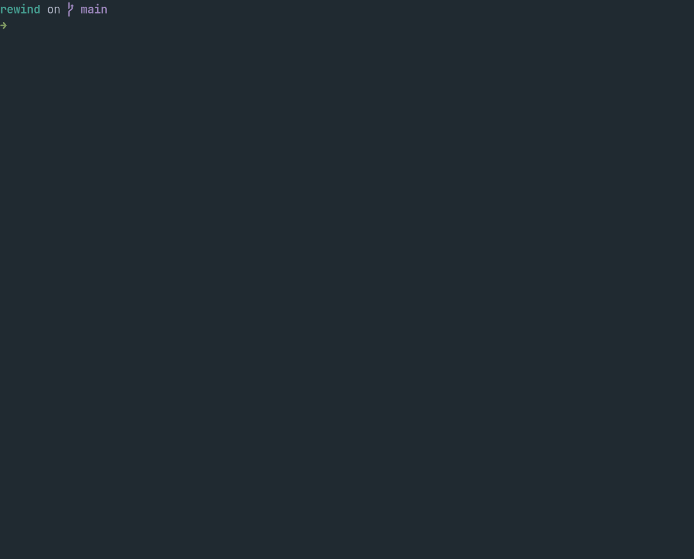

kyoheiu.gitlab.io
kyoheiu/rewind

git clone https://github.com/kyoheiu/rewind.git cd rewind cabal install
rewind [package name you want to downgrade]
like rewind neovim. You can use mutliple arguments like rewind neovim emacs as well.
rewind neovim
rewind neovim emacs